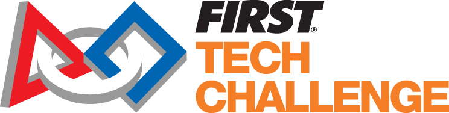

The CyberScots are a FIRST Tech Challenge robotics team from Piedmont, CA. We are building a robot to compete in the tournament later this year. Our team is separated into a hardware team and a software team. The hardware team builds the robot and the software team writes code to help it interact with its environment.
↓
During the tournament there is an autonomous period and a remote control period. During the autonomous period our robot has to determine the difference between a blue and a red ball and also place a preloaded foam cube into the correct column of a box with three columns in order to get the maximum number of points.. After this, we have 30 seconds to re-position the robot. Following that is the driver portion of the event. Here a driver will control the robot and complete various other tasks